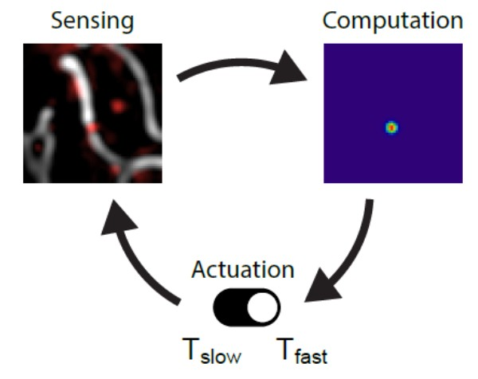

Adaptive, event-driven microscopy
A microscope that watches for the moment something interesting starts, then speeds up to capture it, and slows down again to spare the sample.

The problem
Fluorescence microscopy is usually run at a fixed frame rate. For rare or unpredictable events, such as a mitochondrion dividing, that forces a bad trade-off. Image fast and the light bleaches the dyes and damages the cell long before the event happens. Image slowly and the event is over between two frames. Most of the light dose ends up spent on frames that contain nothing of interest.
Approach
We built an event-driven acquisition framework on an instant structured illumination microscope (iSIM). A neural network analyses each image as it arrives and recognises the onset of a specific biological event. The microscope then changes its own acquisition in real time. It images slowly while it waits for an event, and switches to a fast rate while the event unfolds.
What it enables
With this approach we captured mitochondrial and bacterial divisions at frame rates that match how fast they happen, while extending how long a sample can be imaged overall. Because the microscope responds to the biology itself, the data it collects is enriched in the content you actually care about.
Key paper
- Event-driven acquisition for content-enriched microscopy